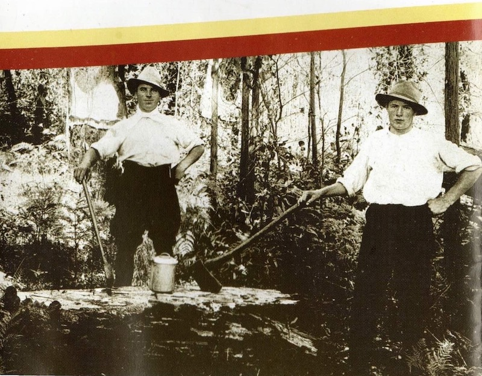
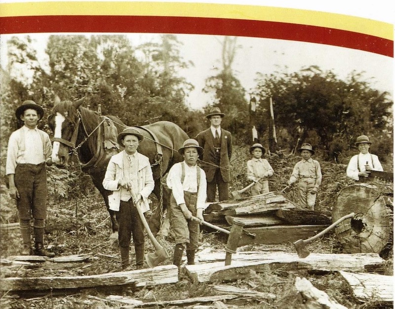

Erica & District Historical Society Inc.

Introduction
The Erica and Districts Historical Society Inc. is a non-profit organization committed to documenting, preserving and promoting the history of our area, run entirely by volunteers.
The Society was formally incorporated in October of 2014 by a group of residents who recognised the importance of preserving all aspects of our local history for the benefit of present and future generations.
Open Days: Every Wednesday, 10 - 2pm or by appointment
Committee Members for 2021/ 2022
President: Jenny McNally
Vice President: Kathleen Harrison
Secretary: Wendy Baillie
Treasurer: Julie Tairua

Sarah Robins & Pricilla Cole. Image courtesy of Robins Family Collection.

Tom Holmes & Arthur Chapman, Moondarra District. 1915. Image courtesy of Museum Victoria

Erica school Agriculture block. Head Teacher, James A Towner. 1920. Photographer: W.Edmunds. Image courtesy of Aitken Family Collection.
Upcoming Events
something at some time.
something else at another time.